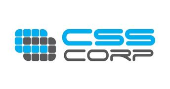

Experience

Movate technologies
1 year
Telecom engineer
Full-Time
Dec 2022 - Present · 10 mos·
Bengaluru, Karnataka, India

Capgemini Engineering
2 years 3 months
Associate Network Engineer - Webex Calling
Full-Time
Jan 2022 - Present · 11 mos·
Gurugram, Haryana, India
- Moved to the Webex calling (Brodcloud) team.
- Supporting enterprise VoIP telephony. - Experienced with setting up and troubleshooting Cisco's brodcloud calling solution on softphone client as well as IP phones.
- Experienced in setting-up enterprise calling features like voicemail, hunt-groups, call queue, auto attendant, voicemail groups.
- Helping customer in IP phone on-boarding, registration and licensing issues with the webex calling (brodcloud).
- Working in coordination with the engineering team to address complex issues with calling services.
- Basic know-how of troubleshooting call quality, disconnections and service issues.
Associate network engineer
Full-time
May 2021 - January 2022 · 9 mos·
Gurugram, Haryana, India
- Supporting Cisco's Webex platform (Meetings, Events and Training) - Cisco cloud collaboration team - Audio and Meetings SBR Team.
- Troubleshooting issues with PSTN connections to Cisco's collaboration products - Webex Meetings, events and trainings.
- Worked with PSTN carriers to address telephony issues with call disconnections, IVR and DTMF issues.
- Experienced in troubleshooting QOS issues related to telephony connections to these collaboration platforms (Audio Quality).
- Working in coordination with the engineering team to address complex issues with calling services.
- Experienced in troubleshooting QOS issues related to telephony connections to these collaboration platforms (Audio Quality).
Customer Support Engineer
Trainee
Nov 2020 - May 2021 · 7 mos·
Gurugram, Haryana, India
- Technical support for Cisco's (Webex) Cloud collaboration platforms ( Meetings / Events / Trainings )
- Helped in setting up Webex meetings / Events / Trainings for end-users and enterprise customers.
- Helped with basic troubleshooting issues related to the platforms mentioned above.
- Helped single / enterprise users with licensing and configuration issues on control hub.